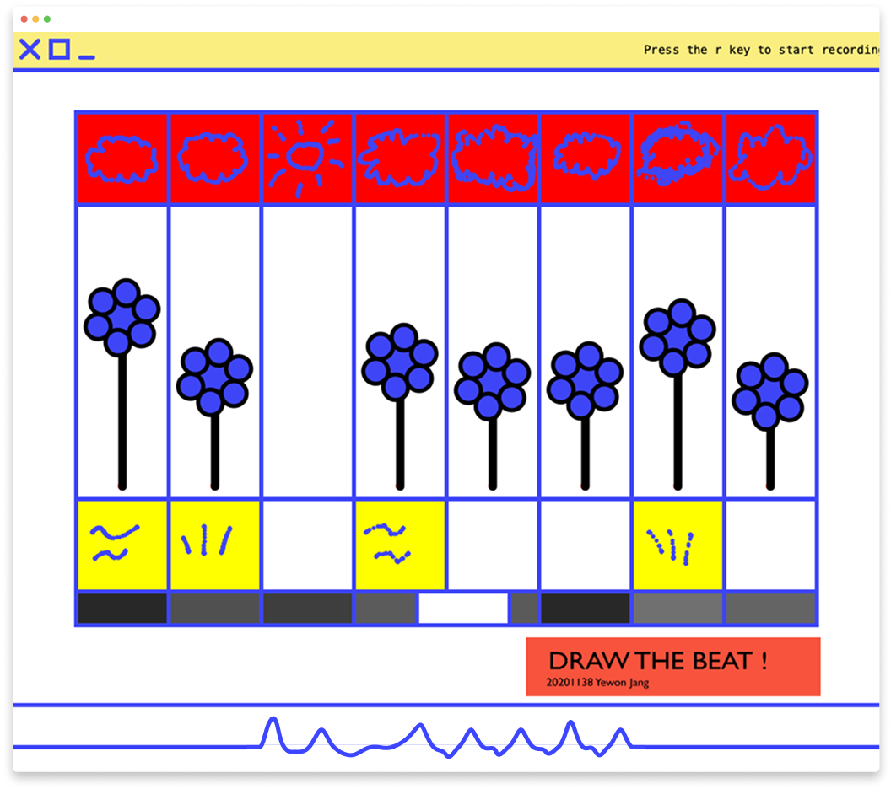

Yewon Jang°
Tool Maker
Draw the Beat!
2021
A program that creates music by drawing
Draw The Beat! is an interactive digital art project that blends music and visual design. Using a custom algorithm developed in Wekinator and visual elements created with p5.js, the project allows users to generate sheet music by drawing beats directly on the screen. The generated music visually unfolds in real time, transforming user input into dynamic compositions.
Draw The Beat! is an interactive digital art project that blends music and visual design. Using a custom algorithm developed in Wekinator and visual elements created with p5.js, the project allows users to generate sheet music by drawing beats directly on the screen. The generated music visually unfolds in real time, transforming user input into dynamic compositions.
1. Key Question
Is there a way to make music composition more intuitive and visual for people?
2. Creating Beat - Machine Learning

Figure 1. Images used in training

Figure 2. Connecting Processing and Wekinator in real-time via OSC control
Draw the Beat! was developed using Processing and Wekinator. Processing visualizes user input in real-time and generates musical elements, while Wekinator uses machine learning to recognize user-drawn graphics and trigger sounds.
3. Creating Sounds

Figure 3. Creating sounds by growing flower's height
4. Examples

Figure 4. An example of a created song : School Bell
Video
Draw the Beat
↖︎
